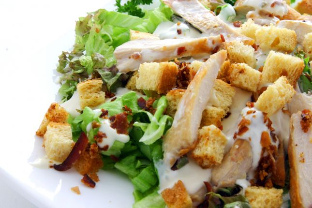
chicken ceasar salad ingredients
- - Lettuce: 1 pcs (large, roughly chopped)
- - Chicken breast: 1 pcs (grilled, sliced)
- - Parmesan cheese: 1/4 cup (grated)
- - Olive oil: 3/4 cup and Salt: 1/2 teaspoon
- - Mayonnaise: 3 tablespoons
- - Lemon juice: 1/4 cup
- - Toast: 1/2 cup (diced)
- - Tomato: 5 pcs (dried)
- - Black pepper: 1/4 teaspoon
- - Garlic: 2 cloves (crushed)
Cooking time : 0 minute
Enough for : 2 people
Price : 500 $
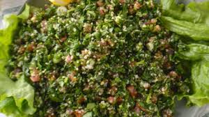
tabouli salad ingredients
- - Bulgur: 1 cup (fine)
- - Onion: 1 (cut into small pieces)
- - Pomegranate molasses: 2 tablespoons
- - Lemon juice: 2 tablespoons
- - Olive oil: 1/3 cup
- - Cherry tomatoes: 4 pieces
- - Parsley: 1/2 cup (chopped)
- - Mint: 1/2 cup (chopped)
- - Cumin: a pinch
- - Pomegranate: as desired (seeds)
Cooking time : 30 minute
Enough for : 4 people
Price : 500 $
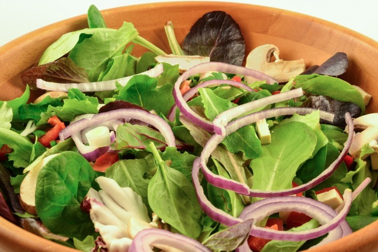
watercress salad ingredients
- - Watercress: 500 grams (washed and drained)
- - Onion: 2 pieces (sliced)
- - Olive oil: 2 tablespoons
- - Wild thyme: 200 grams
- - Red vin egar: half a tablespoon
- - Salt: to taste
- - Black pepper: to taste
- - Lemon juice: 2 tablespoons (acid)
Cooking time : 20 minute
Enough for : 4 people
Price : 500 $
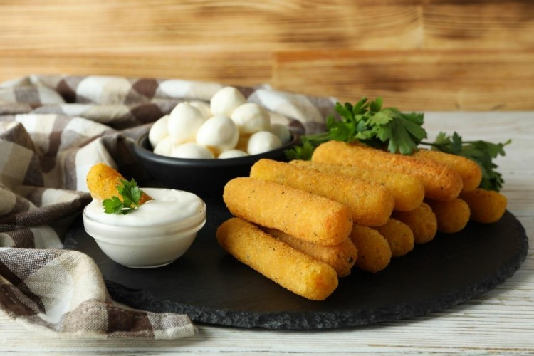
crispy fried mozzarella cheese ingredients
- - Eggs: 2
- - Water: half a cup
- - Black pepper: a pinch
- - Breadcrumbs: a cup and a half (seasoned)
- - Garlic powder: half a teaspoon
- - Flour: a cup (all-purpose)
- - Starch: half a cup
- - Mozzarella cheese: half a kilo (cut into long sticks)
- - Vegetable oil: a liter (for frying)
Cooking time : 40 minute
Enough for : 3 people
Price : 500 $
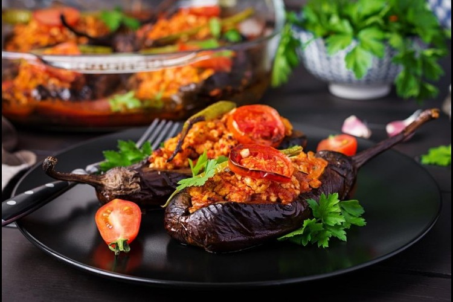
Spicy pickled eggplant with walnuts ingredients
- - Eggplant: 1 kg (small and boiled)
- - Walnuts: 500 grams
- - Garlic: 2 teaspoons (chopped)
- - Red pepper paste: 1 tablespoon
- - Salt: 2 tablespoons
- - Olive oil: 1 cup (or as needed)
Cooking time : 60 minute
Enough for : 4 people
Price : 500 $
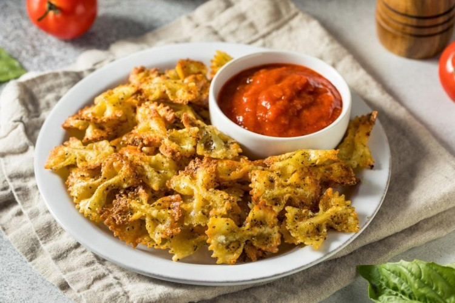
pasta chips ingredients
- - Pasta: 2 cups (preferred form)
- - Vegetable oil: 1 tablespoon
- - Mozzarella cheese: 6 tablespoons (or cheddar / grated)
- - Salt: a pinch
- - Black pepper: a pinch
- - Paprika: a pinch
- - Oregano: a pinch
- - Garlic powder: a pinch
- - Oil: as needed (for frying)
Cooking time : 30 minute
Enough for : 4 people
Price : 500 $
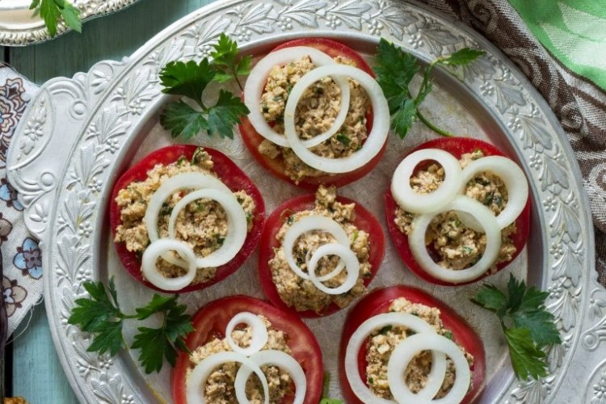
tomato slices with cottage cheese ingredients
- - Tomatoes: 2 (large and sliced)
- - Cottage cheese: 1 cup
- - Parsley: 1/4 cup
- - Walnuts: 2 tablespoons (chopped)
- - White pepper: 1 teaspoon
- - Onion: 1 (cut into wedges)
Cooking time : 30 minute
Enough for : 4 people
Price : 500 $
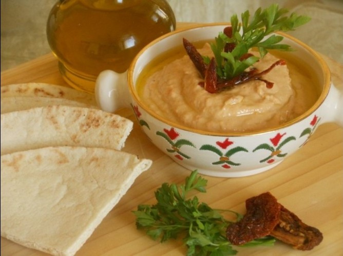
hummus with sun-dried tomatoes ingredients
- - Chickpeas: 2 cups (boiled chickpeas)
- - Lemon juice: 1 cup
- - Garlic: 1 clove (crushed garlic clove)
- - Tahini: 3 tablespoons
- - Salt: a pinch
- - Tomatoes: 10 pieces
- - Olive oil: 1 tablespoon
Cooking time : 0 minute
Enough for : 8 people
Price : 500 $
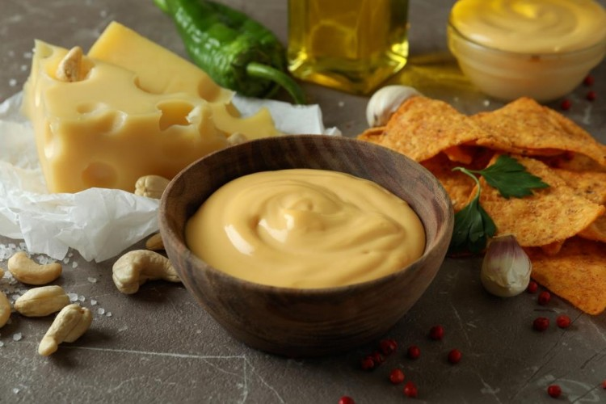
four cheese sauce ingredients
- - Cheddar cheese: 1 cup (coarsely grated)
- - Milk: ½ cup
- - Parmesan cheese: ½ cup (finely grated)
- - Cream cheese: ¼ cup
- - Cheese: 100 grams (Richard / crumbled)
- - Butter: 2 tablespoons
- - Flour: 2 tablespoons
- - Salt: to taste
- - Black pepper: to taste
Cooking time : 20 minute
Enough for : 4 people
Price : 500 $

moussaka with minced meat ingredients
- - Eggplant: 2 pieces (Roman)
- - Hot pepper: 1 pod
- - Bell pepper: 2 pieces
- - Onion: 1 piece
- - Tomato juice: 1 cup
- - Salt: 1 teaspoon
- - Black pepper: 1 teaspoon
- - Cumin: ½ teaspoon (ground)
- - Oil: 2 cups (for frying)
- - Minced meat: 250 grams
- - Bechamel sauce: 2 cups (ready/optional)
Cooking time : 60 minute
Enough for : 4 people
Price : 500 $

french baguette with steak and pickles ingredients
- - Steak: slice
- - Baguette: loaf (large French baguette)
- - Cream cheese: 2 tablespoons
- - Lettuce: 2 leaves (large leaves)
- - Pickled cucumber: 1 (sliced)
- - Onion: 1 (sliced)
- - Sugar: 1 teaspoon
- - Salt: a pinch
- - Black pepper: a pinch (ground)
- - Olive oil: 4 tablespoons (for frying)
Cooking time : 60 minute
Enough for : 2 people
Price : 500 $

green beans with milk ingredients
- - Green beans: 1 cup (fresh)
- - Yogurt: 3 cups
- - Water: as needed
- - Lamb meat: 1 kilo (cut)
- - Salt: as desired
- - Turmeric: 1/2 teaspoon
- - Starch:2tablespoons and Bay leaf:1leaf
- - Black pepper: 1 teaspoon
- - Cinnamon: 1 stick
- - Onion: 1 (cut) and 1 (chopped)
- - Cardamom:5seeds and Corn oil:1/2 cup
Cooking time : 20 minute
Enough for : 4 people
Price : 500 $
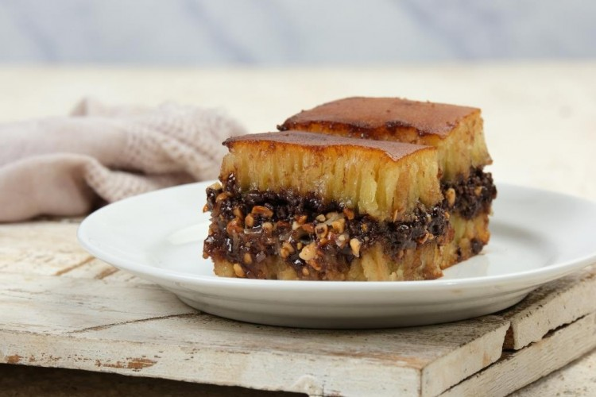
hejazi Alexandrian ingredients
For the dough:
- - Milk: 1 cup and Sugar: 2 tablespoons
- - Instant yeast: 1 tablespoon and Fine semolina: 2 cups
- - Flour: 2 cups and Sugar: ½ cup
- - Ghee: 2 cups and Salt: a pinch
For the filling:
- - Sugar: three quarters of a cup
- - Fine semolina:a cup and Water:3 spoons
- - Cinnamon powder and Cocoa:2 spoons
- - Pistachios:half a cup, Almonds:half a cup
Cooking time : 60 minute
Enough for : 5 people
Price : 500 $
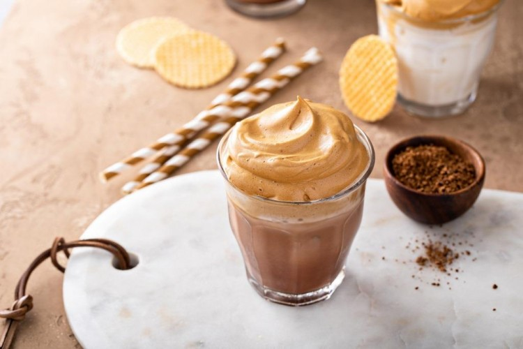
peanut butter mousse ingredients
- - Peanut butter: 1 cup (creamy)
- - Powdered sugar: 1 cup
- - Vanilla extract: 1 teaspoon
- - Whipping cream: 2 cups (heavy)
- - Chocolate chips: as desired (for decoration)
Cooking time : 60 minute
Enough for : 5 people
Price : 500 $
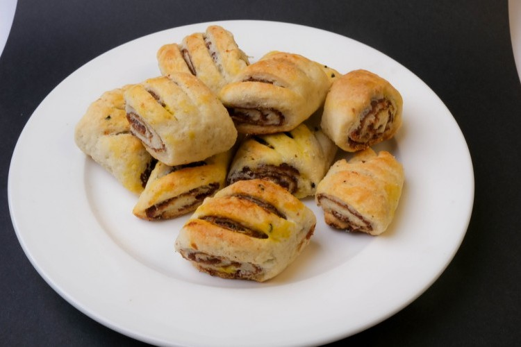
Klijat with date molasses ingredients
- For the filling:
- 1.Date molasses: half a cup
-
2. Dry black lemon and Cinnamon and Cardamom and Ginger and Sugar: a teaspoon: a
tablespoon
- - Flour: 4 cups (brown)
- - Powdered sugar and Powdered milk and Vegetable oil: half a cup
- - Yeast: a tablespoon and Egg: 1 piece
- - Saffron: half a teaspoon and Cardamom: a teaspoon
Cooking time : 60 minute
Enough for : 6 people
Price : 500 $
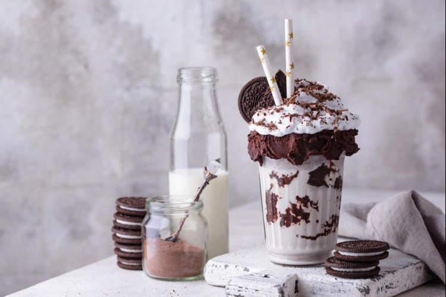
oreo milkshake ingredients
- - Oreo cookies: 5 pieces
- - Milk: 1 cup (liquid)
- - Yogurt: 1 cup
- - Ice cream: ½ cup (vanilla flavored)
Cooking time : 60 minute
Enough for : 5 people
Price : 500 $
Hibiscus Mojito ingredients
- - Hibiscus leaves: 2 cups (dried)
- - Mint: 4 leaves
- - Soft drinks: 1 cup
- - Sugar: as desired (for sweetening)
- - Lemon juice: 2 tablespoons
- - Ice cubes: as desired
Cooking time : 40 minute
Enough for : 4 people
Price : 500 $
mango and berry smoothie ingredients
- - Yogurt: 1 cup
- - Mango: 1 piece (cut into cubes)
- - Cranberries: 5 pieces
- - Honey: as desired (for sweetening)
- - Ice cubes: as desired
Cooking time : 10 minute
Enough for : 1 people
Price : 500 $